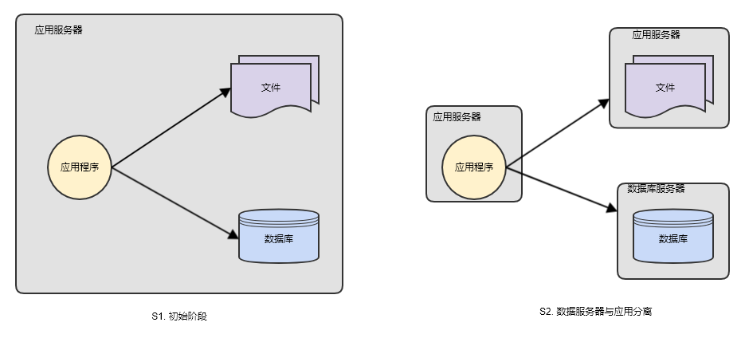
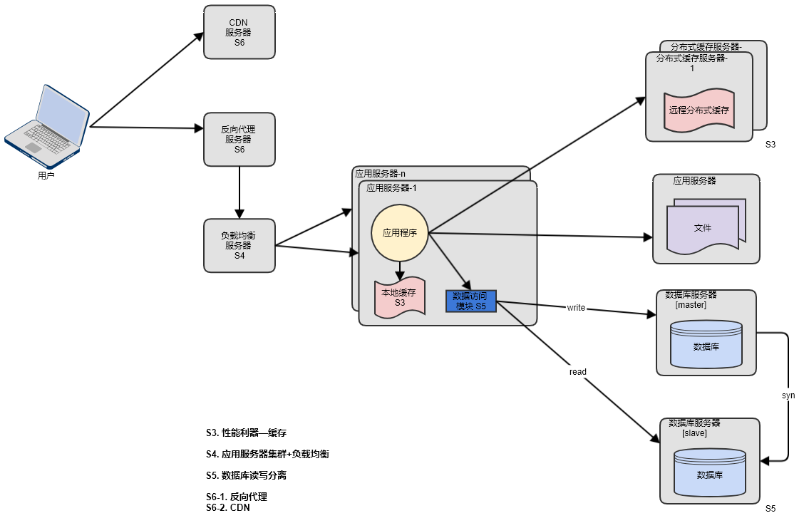
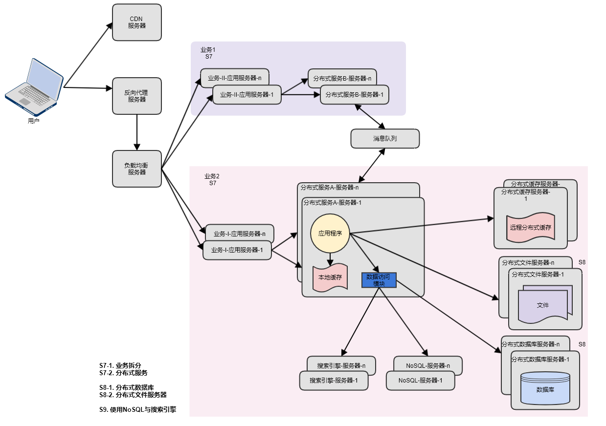

进入互联网行业做后台研发工作，也将近两年了，一直以来对譬如腾讯、淘宝这样的大型互联网架构没有全面的认识，可能顶多只是比较了解当中的一些点。这样的情况，其实是比较危险的，就如同，生活在一个城市的路盲，只了解自己家附近的几条街巷、或者只了解常去商业区域周边的话，一旦你身处这些区域之外（面临的问题超出了自己所掌握技术点的解决范畴），那基本寸步难行，哪怕寻找路人帮助或者看导航地图，也常少不了走弯路。
本文主要简要汇总下大型互联网技术架构的演变过程，希望给出一个全面的认识。
对于每一次演变着重从以下三点介绍：
- 演变背后的驱动力（每一次演变主要矛盾）
- 解决（缓解）矛盾的套路
- 每一次套路背后的考量
S1 初始阶段的网站架构
起步阶段用户不多，通常只需要一台服务器即可满足，应用程序、文件及数据库均部署在一台物理机器上。
S2 应用服务与数据服务分离
随着业务发展，用户渐增，服务器负载高居不下，站点响应变慢，同时数据增多导致存储空间捉襟见肘。考虑到应用、数据、文件三种服务对硬件资源的要求存在差异，物理上分离部署（分层套路），可以缓解因一台服务器资源吃紧导致的性能问题。如此一来，应用服务器配备更高性能的CPU以满足业务逻辑处理，数据库服务器配备高性能磁盘及大容量内存以满足快速的磁盘检索与数据缓存，文件服务器配备大容量磁盘来满足用户上传文件的存储。

S3 DB不行，缓存来扛
用户渐增，网站并发请求数增加，直接导致数据库并发处理压力过大，再一次面临站点响应缓慢而影响用户体验。考虑到用户访问的数据并非均匀分布，而是类似于“二八定律”，80%的用户集中访问20%的数据，所以，缓存少部分热点数据，直接大幅降低数据库的并发压力。
S4 使用应用服务器集群，水平线性扩展网站并发处理能力
缓解了数据库的访问压力后，网站高峰期的并发数接近单一应用服务器的处理上限，此时应用服务器成为瓶颈。负载均衡+应用服务器集群是非常有效的解决方案（集群套路），在一定规模内（达到负载均衡单点能力上限之前），可以实现线性的服务能力伸缩（灵活的伸缩性）。
除此之外，企图更换更强性能的应用服务器是徒劳的，因为一台机器无论如何都无法支撑持续高速增长的业务。
S5 数据库读写分离
尽管S3阶段中数据层新增的缓存层顶住了相当比例的DB访问请求，但仍然有小比例的读操作、全部的写操作到达DB，当用户到达一定规模，这部分比例的DB读写请求仍会到达数据库并发上限，尤其高峰时段。这个阶段，常用套路就是数据库读写分离，把相当比例的读请求剥离到从库，分担主库压力。
S6 CDN加速网站响应
继数据库读写分离后，整个网站的通常情况下响应尚可。但在大促/活动场景下，某些业务的高并发访问（比如秒杀），仍然对应用服务器的网络/磁盘IO有不小压力，妨害用户体验。对于静态资源（图片及js文件等）可以部署到CDN，快速返回给用户端，提高页面加载速度，同时降低应用服务器压力（更少的机器支撑更多业务，同时也降低成本了）。
注：一般说还可以搭配反向代理缓存静态内容，CDN与反向代理的区别是什么?

S7 业务拆分与分布式服务
随着业务的发展，面向用户的产品也呈现多样性，为有效地组织与管理公司业务，通常将整个网站业务划分成不同产品线（公司组织架构层面也作相应的调整），交由不同业务团队负责，这是业务层面的拆分。
另一个，在业务拆分的背后，需要有分布式服务的支撑，以支持灵活的伸缩性。因为业务拆分过程，伴随着公共业务（用户管理、支付等）的独立，以及不同体量业务间的分离，
公共业务及大体量的业务访问量非常之大，为了避免不同体量的业务采用一刀切的方式伸缩（控制成本），分布式服务成为必要的选择，可以实现不同业务按需部署，灵活伸缩。
问题：为什么采用分布式服务？为什么采用的微服务架构？
S8 数据层最后的杀手锏：分布式文件系统、分布式数据库系统
自业务拆分后，在体量庞大的业务系统中，读写分离的数据库架构仍然存在压力。
一方面，不同体量的业务数据库混合部署于同一物理机器上，互相影响，常用解决手段是按业务维度，单独部署数据库（水平拆分）；
另一方面，体量大的业务数据库存在并发瓶颈、庞大单表读写操作效率低下等问题，常用的解决手段是按数据的某个维度（比如UID、商品）分库分表（垂直拆分）。
对于文件服务，也是类似的。
S9 NoSQL与搜索引擎
随着网站业务越来越复杂，对数据存储与搜索的需求也变得复杂（数据库的分库分表也是造成搜索困难的原因之一），网站需要非关系数据库NoSQL与搜索引擎的支撑。

大型的网站架构演化到这里，基本上大多数的技术问题都得以解决。但这只是，基本上T_T
一方面，一个大型网站架构进化至此，web层、服务层、数据层均是灵活的伸缩性架构，水平扩展加机器就能解决问题。
但当中仍然存在不少组件（中间件）并非分布式，而是集中式，例如常见的master-slave架构的服务注册中心，
随着业务体量的增长，早晚也会超出这些组件的性能上限。
另一方面，整个网站部署于同一机房，规模本身也会受限于机房固有的物理空间。
对于前面的两个问题，阿里基于单元化（超级体量的业务）与中心化（一般体量业务）的异地多活架构是一个解决方案。